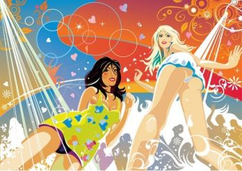

|

Диско (англ. Disco, букв. «дискотека») — один из основных жанров танцевальной музыки XX века, возникший в начале 1970-x годов.
Диско почти одновременно развивалось в США и Европе. На становление жанра преимущественно повлияли такие стили музыки, как фанк, соул и латиноамериканская музыка. Для американского диско характерно звучание, близкое к фанку и соулу, в то время как европейское диско тесно переплеталось с традиционной эстрадой и общими тенденциями поп-музыки. В большинстве песен диско струнно-смычковые, духовые инструменты, электрическое пианино и электрические гитары создают сочное и отполированное звучание. Оркестровые инструменты, такие как флейта, часто используются в качестве солирующих инструментов, в отличие от электрогитары, солирующей в рок-музыке. С развитием технологий многие исполнители стали включать в аранжировку электронные инструменты, например, синтезаторы.
Самые известные американские исполнители диско — это Донна Саммер, Дайана Росс, группы Bee Gees, KC and the Sunshine Band, Глория Гейнор, Village People, Chic, The Jackson 5. Донна Саммер станет первой известной и самой популярной диско-певицей, в конечном счете получив звание «Королевы диско», дарованное ей различными критиками, а также будет играть роль первопроходца в электронной музыке, которая позже стала заметным элементом диско-музыки в целом. В то время как исполнители и группы получили львиную долю внимания публики, продюсеры, работающие за кулисами, играли равную, если даже не большую, роль в создании диско-музыки, так как они сочиняли песни и создавали инновационные методы производства, которые были частью звука диско.
Диско в СССР:
В СССР стиль диско стартовал приблизительно с 1978 года. В конце 1978 года СССР с гастролями посетила немецкая поп-группа Boney M. Одним из первых отечественных музыкальных коллективов, исполняющих композиции в стиле диско, был "Оркестр и вокальная группа «Диско»". Кроме перепевок зарубежных диско-хитов, советские исполнители и ансамбли исполняли произведения отечественных авторов на родном языке. В конце 70-х — начале 80-х активно начали исполнять и писать песни в стиле диско композиторы Давид Тухманов, Александр Зацепин, Аркадий Хаславский, Вячеслав Добрынин, Юрий Антонов, Алла Пугачёва, а также ВИА «Здравствуй, песня», «Красные маки», «Верасы» и «Весёлые ребята». В начале своего творческого пути песни в стиле диско исполнял и ансамбль «Земляне». Ярчайшими отечественными песнями в стиле диско считаются композиции Александра Зацепина «Ищу тебя», написанная им для фильма «31 июня» в 1978 году и «Узнай меня», написанная для одноименного фильма 1979 года и исполненные певицей Татьяной Анциферовой. Специально к Олимпиаде-80 ВИА «Красные маки» был записан альбом «Кружатся диски», аранжировки песен для которого делал Юрий Чернавский.
С середины 80-х в СССР стартовал советский диско-бум. Слушатели познакомились с творчеством многочисленных отечественных групп и певцов, отметившихся в стилях евродиско и постдиско: Дисплей, Мираж, Женя Белоусов, Маленький принц, Электроклуб, Форум, Рома Жуков, Ласковый май, Фея, Комбинация, Кристина, Родня, Фристайл, Наталья Гулькина, Кар-мэн, На-На, Вечірня школа, Руся, Игорь Азаров, Олесь Зорян и многие другие. Во многом построили свой репертуар на шлягерах диско как известные певцы и певицы, так и известные ансамбли: «Весёлые ребята» («Телеграмма», «Не волнуйтесь, тётя», «Розовые розы», «Рыжий клоун», «Чашка чая», «Треугольник», «Родня», «Мне очень нравится Фролова» и многие другие), «Пламя» («Кенгуру», «Дарю тебе Москву», «Ищите женщину», «Айболит», «Фея», «Чудо», «Снежная королева», «Капризная», «Девочка с Приморского бульвара», «Причал»), «Синяя птица» («Звездолёт», «Видеомагнитофон», «День открытых дверей», «Карусельная лошадка», «Путешествие по карте»), «Самоцветы» («Али-баба» (с элементами восточного фолк-дэнса), «Танцуй», «Вечер с друзьями», «Аэробика», «На карнавале»), «Верасы» («Кукла Мадонна», «Карнавал», «Аэробика», «Полёт», «Фестиваль»), «Сябры» («У криницы», «Ворожба», «Человек-оригинал»), «Маки» («Фантомас», «Расскажи», «Так случилось»), Голубые гитары (они же «Игра») («Неспелая вишня», «Девчонка — сладкий мёд», «Дастархан», «Приключенческий мир»), «Ялла» («Масхарабозы», «Борода верблюда», «Канатоходцы»), «Краяни» («Между небом и землёй», «Украинский сувенир», «Зачем же ты поверила»), Алла Пугачёва («Робинзон», «Сто друзей», «Надо же!», «Балалайка», «Гонка», «Иван Иваныч»), Михаил Боярский («Сивка-бурка», «Лунное кино». «Трёхголовый дракон», «Говорящие собаки», «Фараон», «Плюшевый котёнок»), Ольга Зарубина («На теплоходе музыка играет», «Тень», «Как близко ты и далеко» (дуэт с Николаем Караченцовым)), Валентина Легкоступова («Крымский пляж», «Я улыбаюсь»), Лариса Долина («Льдинка», «Половинка», «Практикантка Катя», «Дельтаплан»), София Ротару («Луна-луна», «Театр», «Было, но прошло», «Золотое сердце», «Хуторянка»), Юрий Антонов («Лунная дорожка», «Бег вокруг», «Живёт повсюду красота»), Валерий Леонтьев («Женский портрет», «Гиподинамия», «Притяжение любви», «Маргарита», «Белый снег», «Емеля»), Маргарита Суворова («Кимоно», «Здравствуй, милый», «Берегите Москву»), Игорь Корнелюк («Билет на балет», «Ходим по Парижу», «Куд-куда», «Дожди», «Пора домой»), Анне Вески («Радоваться жизни», «Обезьяна», «Прошлогодний снег», «Маленькая пристань», «Гороскоп», «Не со мной»), Игорь Николаев («Незнакомка», «Мельница», «Мастер и Маргарита», «Королевство кривых зеркал», «Юная богиня», «Принцесса», «Фантастика», «День Рождения»). В стиле диско были исполнены и одни из ранних песен молодого Филиппа Киркорова: «Луна-парк», «Весенний календарь».
|